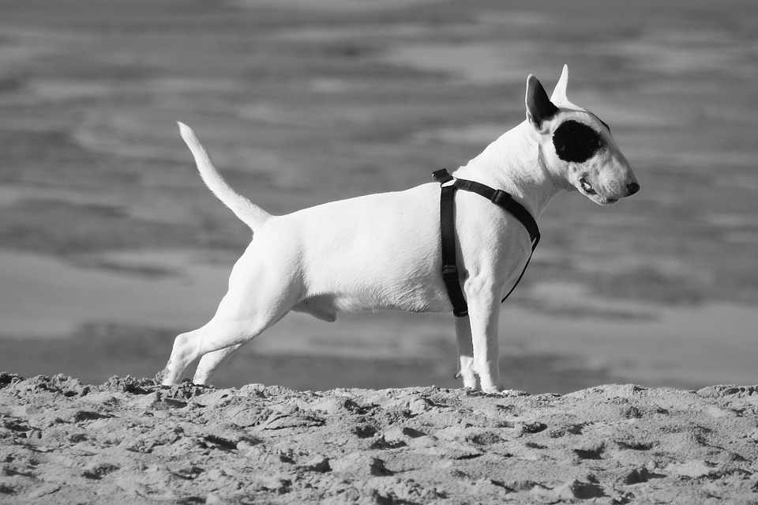

Bull terrier
Fonte: site Pixabay
O Bull Terrier Inglês surgiu na metade do século 19. O cruzamento entre o Old English terrier e o bulldog realizado pelo James Hinks, para realizar uma prática antiga (esportiva) Bull-baiting.
Ler maisO Bull Terrier Inglês surgiu na metade do século 19. O cruzamento entre o Old English terrier e o bulldog realizado pelo James Hinks, para realizar uma prática antiga (esportiva) Bull-baiting.
Ler maisConhecido como Pit Bull; Atualmente existem várias ramificações da raça, porém originário do cruzamento com o cruzamento do Bulldog Inglês com Old English terrier no século XIX, criado e usado especialmente para Bull-baiting. Por isso a fama de "cão matador"
Ler mais
Mais conhecidos nacionalmente como "caramelos",originam-se de cães europeus na época da colonização.Em 2020, foram realizadas petições para pôr a imagem do caramelo nas cédula de R$ 200. Sendo uma raça não "pura", há alguns casos que pode-se notar as misturas de raças e em outros casos não.
Ler mais
O schnauzer gigante é uma raça de cão oriunda da Alemanha. Do cruzamentos entre Dogue Alemão e o Boiadeiro de Flandres. Feito para conduzir gado e pastorear ovelhas. Existe 3 tipos : o miniatura, o média (Standard) e o gigante.
Ler maisDálmata é uma raça de cães oriunda da região histórica da Dalmácia na Croácia. São cães que podem ter sua pelagem branca com manchas pretas ou marrons. Não sabe-se sua origem realmente; Existe uma pintura no egito antigo de um cão parecido com dalmata. Também acreditam que pode ser originária do Arlequim (Dogue Alemão) com cão pastor.
Ler mais
Dogue alemão, também chamado de grande dinamarquês, porém apesar do nome, não sabe -se com clareza sua origem. Sua origem de cruzamentos de mordidas de touros (Bulldogs), e cães de caça,criado pela nobreza para o hábito de caçar ursos, veadados e lobos. Conhecida pelo seu porte gigante. Existe uma ramificação do Dogue alemão, O Arlequim é um Dogue Alemão branco com manchas escuras de vários tamanhos e formas, irregularmente distribuídas pelo corpo.
Ler mais